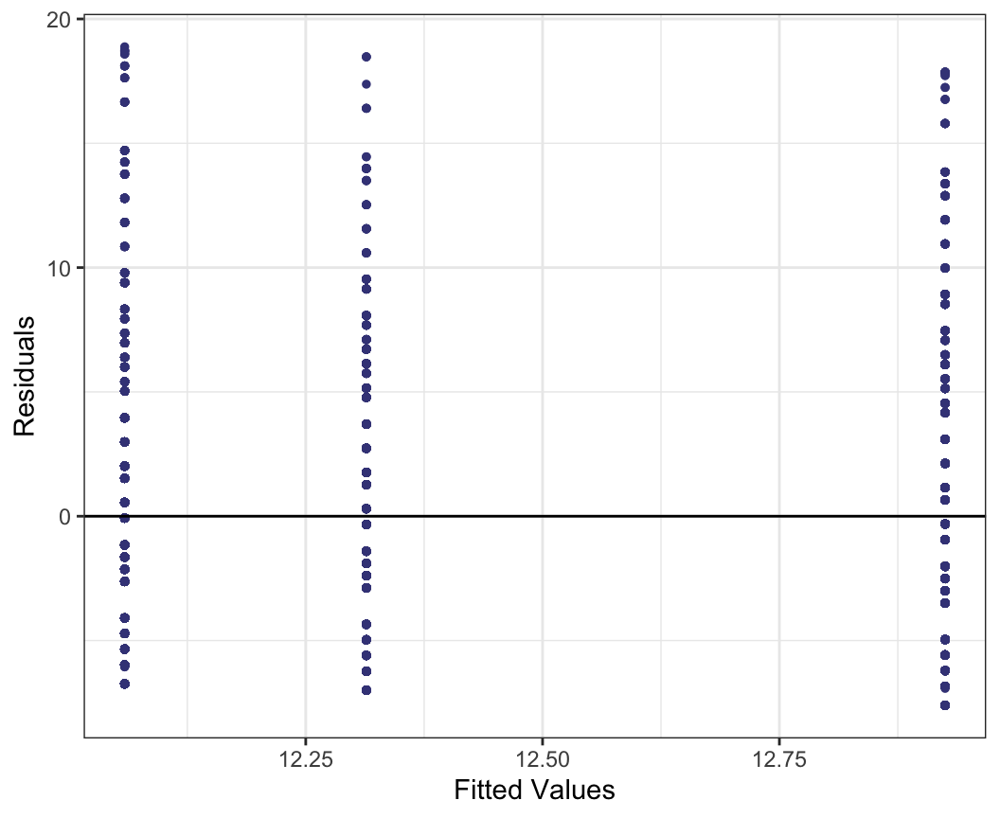

| duration | n_bids | cond | start_pr | seller_rate | wheels | sale |
|---|---|---|---|---|---|---|
| 3 | 20 | new | 0.99 | 1580 | 1 | 47.55 |
| 7 | 13 | used | 0.99 | 365 | 1 | 33.05 |
| 3 | 16 | new | 0.99 | 998 | 1 | 42.00 |
| 3 | 18 | new | 0.99 | 7 | 1 | 44.00 |
| 1 | 20 | new | 0.01 | 820 | 2 | 71.00 |
| 3 | 19 | new | 0.99 | 270144 | 0 | 41.00 |
| 1 | 13 | used | 0.01 | 7284 | 0 | 37.02 |
| 1 | 15 | new | 1.00 | 4858 | 2 | 51.00 |
| 3 | 29 | used | 0.99 | 27 | 1 | 43.00 |
| 7 | 8 | used | 19.99 | 201 | 1 | 46.00 |
Topic 11 - Multiple Linear Regression
Download or print notes to PDF
If you’d like to export this presentation to a PDF, do the following
- Toggle into Print View using the E key.
- Open the in-browser print dialog (CTRL/CMD+P)
- Change the Destination to Save as PDF.
- Change the Layout to Landscape.
- Change the Margins to None.
- Enable the Background graphics option.
- Click Save.
This feature has been confirmed to work in Google Chrome and Firefox.
Key Concepts
Motivating Example
It’s time to sell your copy of Mario Kart for the Wii…
You decide you’re going to sell the game on Ebay, but aren’t quite sure how much money you’ll end up getting for it.
What are some factors that you think might help to predict the final sale price of the game?
Motivating Example
Luckily, we have a dataset that contains the sale prices, along with other information, for 143 Ebay sales of the Mario Kart Wii game.
duration: auction length, in daysn_bids: number of bidscond: game condition, new or usedstart_pr: start price of the auctionseller_rate: the seller’s rating on Ebaywheels: number of Wii wheels included in salesale: the final sale price of the game
Simple Linear Regression
Using last week’s tools, we could try to model the sale variable using one of the quantitative variables available in the dataset.
For example, \[\hat{\text{sale}} = 45.6945 + 0.1188\text{ start price}\] is the fitted model when we use only the start price variable to model the final sale price.
Would it be better if we tried to incorporate multiple explanatory variables in the model?
Multiple Linear Regression
Multiple linear regression models the relationship between one quantitative response and multiple explanatory variables.
Call:
lm(formula = sale ~ duration + n_bids + cond + start_pr + seller_rate +
wheels, data = mk)
Residuals:
Min 1Q Median 3Q Max
-21.628 -6.682 -2.311 2.777 236.167
Coefficients:
Estimate Std. Error t value Pr(>|t|)
(Intercept) 1.364e+01 8.979e+00 1.519 0.131056
duration 3.450e-01 8.738e-01 0.395 0.693548
n_bids 1.171e+00 4.189e-01 2.797 0.005914 **
condused 1.545e+00 4.719e+00 0.327 0.743857
start_pr 2.787e-01 1.760e-01 1.583 0.115723
seller_rate 2.757e-05 4.098e-05 0.673 0.502296
wheels 1.059e+01 2.657e+00 3.986 0.000109 ***
---
Signif. codes: 0 '***' 0.001 '**' 0.01 '*' 0.05 '.' 0.1 ' ' 1
Residual standard error: 22.4 on 136 degrees of freedom
Multiple R-squared: 0.1723, Adjusted R-squared: 0.1358
F-statistic: 4.719 on 6 and 136 DF, p-value: 0.0002139\[\begin{aligned}\hat{\text{sale}} &= 13.64 + 0.35 \text{duration } + 1.17 \text{bids} + 1.55 \text {used}\\ &+ 0.28 \text{start price} + 0.00003 \text{seller rate}+10.59 \text{wheels}\end{aligned}\]
MLR - Determining the Coefficient Estimates
\[\begin{aligned}\hat{\text{sale}} &= 13.64 + 0.35 \text{duration } + 1.17 \text{bids} + 1.55 \text {used}\\ &+ 0.28 \text{start price} + 0.00003 \text{seller rate}+10.59 \text{wheels}\end{aligned}\]
The estimates in the above model are determined by finding the model that yields the smallest sum of squared residuals (just like in simple linear regression).
R is minimizing \(\sum \limits_{i=1}^{n}(y_i-\hat{y}_i)^2\) to find the “best model” (a.k.a. the least squares regression model)
MLR - Understanding the Coefficient Estimates
\[\begin{aligned}\hat{\text{sale}} &= 13.64 + 0.35 \text{duration } + 1.17 \text{bids} + 1.55 \text {used}\\ &+ 0.28 \text{start price} + 0.00003 \text{seller rate}+10.59 \text{wheels}\end{aligned}\]
Which of the explanatory variables in the above model are quantitative?
- duration, bids, start price, seller rate, and wheels
Which of the explanatory variables are categorical?
- used
MLR - Understanding the Coefficient Estimates
\(\begin{aligned}\hat{\text{sale}} &= 13.64 + 0.35 \text{duration } + 1.17 \text{bids} + 1.55 \text {used}\\ &+ 0.28 \text{start price} + 0.00003 \text{seller rate}+10.59 \text{wheels}\end{aligned}\)
- What does the model look like when considering a “used” game?
\(\begin{aligned}\hat{\text{sale}} &= (13.64+1.55) + 0.35 \text{duration } + 1.17 \text{bids}\\ &+ 0.28 \text{start price} + 0.00003 \text{seller rate}+10.59 \text{wheels}\end{aligned}\)
- What does the model look like when considering a “new” game?
\(\begin{aligned}\hat{\text{sale}} &= 13.64 + 0.35 \text{duration } + 1.17 \text{bids} \\ &+ 0.28 \text{start price} + 0.00003 \text{seller rate}+10.59 \text{wheels}\end{aligned}\)
MLR - Understanding the Coefficient Estimates
\(\begin{aligned}\hat{\text{sale}} &= 13.64 + 0.35 \text{duration } + 1.17 \text{bids} + 1.55 \text {used}\\ &+ 0.28 \text{start price} + 0.00003 \text{seller rate}+10.59 \text{wheels}\end{aligned}\)
- Interpret the coefficient estimate for duration
When all other explanatory variable values are held constant, we expect final sale price to increase by $0.35 for each additional day the game is up for auction.
Coefficient of Determination, \(R^2\)
How do we know if the model is good fit?
The coefficient of determination, \(R^2\) defines the proportion of variability in the response variable that can be explained by the model.
Total Sum of Squares \[SST = \sum \limits_{i=1}^n (y_i-\overline{y})^2\] Total variability in the response variable.
Model Sum of Squares \[SSR = \sum \limits_{i=1}^n (\hat{y}_i-\overline{y})^2\] Variability in the response variable explained by the model.
Error Sum of Squares \[SSE = \sum \limits_{i=1}^n (y_i-\hat{y}_i)^2\] Unexplained variability in the response variable.
\[R^2 = \frac{SSR}{SST} = 1-\frac{SSE}{SST}\]
\(R^2\)
\(R^2\) will always be between 0 and 1
A larger value of \(R^2\) indicates more the variability in the response is explained by the model.
Adding more variables will always increase \(R^2\).
\(R^2= 1-\frac{SSE}{SST}\)
Adjusted \(R^2\)
The adjusted \(R^2\) accounts for the number of explanatory variables used to fit the model.
Adjusted \(R^2 = 1 - \bigg( \frac{n-1}{n-(k+1)}\bigg) \bigg( \frac{SSE}{SST}\bigg)\) where \(k+1\) indicates the number of coefficients estimated in the model.
\(R^2\) vs. Adjusted \(R^2\)
Consider two models:
Model 1: Uses duration, bids, condition (used), start price, seller rate, and wheels as explanatory variables
\(\begin{aligned}\hat{\text{sale}} &= 13.64 + 0.35 \text{duration } + 1.17 \text{bids} + 1.55 \text {used}\\ &+ 0.28 \text{start price} + 0.00003 \text{seller rate}+10.59 \text{wheels}\end{aligned}\)
Model 2: Uses bids, start price, seller rate, and wheels as explanatory variables
\(\hat{\text{sale}} = 17.05 + 1.15 \text{bids} + 0.30 \text{start price} + 0.00002 \text{seller rate}+9.76 \text{wheels}\)
The model output for each of these models is on the following slide.
\(R^2\) vs. Adjusted \(R^2\)
Model 1
Call:
lm(formula = sale ~ duration + n_bids + cond + start_pr + seller_rate +
wheels, data = mk)
Residuals:
Min 1Q Median 3Q Max
-21.628 -6.682 -2.311 2.777 236.167
Coefficients:
Estimate Std. Error t value Pr(>|t|)
(Intercept) 1.364e+01 8.979e+00 1.519 0.131056
duration 3.450e-01 8.738e-01 0.395 0.693548
n_bids 1.171e+00 4.189e-01 2.797 0.005914 **
condused 1.545e+00 4.719e+00 0.327 0.743857
start_pr 2.787e-01 1.760e-01 1.583 0.115723
seller_rate 2.757e-05 4.098e-05 0.673 0.502296
wheels 1.059e+01 2.657e+00 3.986 0.000109 ***
---
Signif. codes: 0 '***' 0.001 '**' 0.01 '*' 0.05 '.' 0.1 ' ' 1
Residual standard error: 22.4 on 136 degrees of freedom
Multiple R-squared: 0.1723, Adjusted R-squared: 0.1358
F-statistic: 4.719 on 6 and 136 DF, p-value: 0.0002139\(R^2 = 0.1723\)
Adjusted \(R^2 = 0.1358\)
Model 2
Call:
lm(formula = sale ~ n_bids + start_pr + seller_rate + wheels,
data = mk)
Residuals:
Min 1Q Median 3Q Max
-21.373 -6.441 -1.771 2.340 238.785
Coefficients:
Estimate Std. Error t value Pr(>|t|)
(Intercept) 1.705e+01 7.144e+00 2.387 0.01836 *
n_bids 1.153e+00 4.132e-01 2.789 0.00603 **
start_pr 2.952e-01 1.703e-01 1.733 0.08525 .
seller_rate 1.910e-05 3.858e-05 0.495 0.62141
wheels 9.755e+00 2.287e+00 4.266 3.67e-05 ***
---
Signif. codes: 0 '***' 0.001 '**' 0.01 '*' 0.05 '.' 0.1 ' ' 1
Residual standard error: 22.27 on 138 degrees of freedom
Multiple R-squared: 0.1698, Adjusted R-squared: 0.1457
F-statistic: 7.056 on 4 and 138 DF, p-value: 3.372e-05\(R^2 = 0.1698\)
Adjusted \(R^2 = 0.1457\)
Categorical Variables in Multiple Linear Regression
Let’s use the loans_full_schema dataset to fit a model for interest rate using multiple explanatory variables.
| Variable | Description |
|---|---|
interest_rate |
Interest on the loan, in an annual percentage. |
debt_to_income |
Debt-to-income ratio, which is the percentage of total debt of the borrower divided by their total income. |
homeownership |
The ownership status of the borrower’s residence: rent, mortgage, own. |
üé© Question 1: How many levels are there in the categorical variable homeownership?
üé© Question 2: How many variables do you think we will we need to use in the multiple linear regression model to represent the homeownership variable? Explain.
Categorical Variables in Multiple Linear Regression
Call:
lm(formula = interest_rate ~ debt_to_income + homeownership,
data = loans_full_schema)
Residuals:
Min 1Q Median 3Q Max
-22.244 -3.647 -0.794 2.637 19.055
Coefficients:
Estimate Std. Error t value Pr(>|t|)
(Intercept) 11.046539 0.098077 112.631 <2e-16 ***
debt_to_income 0.049398 0.003297 14.982 <2e-16 ***
homeownershipOWN 0.320679 0.151948 2.110 0.0348 *
homeownershipRENT 0.981873 0.107021 9.175 <2e-16 ***
---
Signif. codes: 0 '***' 0.001 '**' 0.01 '*' 0.05 '.' 0.1 ' ' 1
Residual standard error: 4.927 on 9972 degrees of freedom
(24 observations deleted due to missingness)
Multiple R-squared: 0.02833, Adjusted R-squared: 0.02804
F-statistic: 96.92 on 3 and 9972 DF, p-value: < 2.2e-16üé© Question 3: Consider a borrower who has a mortgage on their home. What would the multiple linear regression look like for the borrower?
üé© Question 4: Consider a borrower who is renting their home. What would the multiple linear regression look like for the borrower?
\[\text{interest\_rate} = 11.0465 + 0.0494 \text{debt\_to\_income} + 0.3207\text{own} + 0.9819\text{rent}\]
Checking Model Conditions

When fitting the LSRL, we generally require:
Linearity - the data should indicate a linear trend
Nearly normal residuals - the residuals should be approximately normally distributed
Constant variability - the variability of the points around the line should be roughly constant
Independent observations
Checking Model Conditions

üé© Question 5: Using the residual plot, does it appear that any of the least squares regression line conditions (linearity, normal residuals, constant variability, or independence) are violated for the model? Explain why and use the residual plot to justify your answer.
03:00
Checking Model Conditions
When debt_to_income is removed, the fitted model is \(\hat{\text{interest\_rate}} = 12.0589 +
0.2551 \text{ own} + 0.8661 \text{ rent}\)

üé© Question 6: The residual plot for this reduced model displays fitted values (based on the model) on the x-axis and residuals on the y-axis. Why do the residuals appear to follow three vertical lines?
02:30
Model Selection
Compare the model with four predictors:
Call:
lm(formula = interest_rate ~ homeownership + annual_income +
total_credit_limit + public_record_bankrupt, data = loans_full_schema)
Residuals:
Min 1Q Median 3Q Max
-8.4246 -3.5683 -0.7637 2.6970 19.6673
Coefficients:
Estimate Std. Error t value Pr(>|t|)
(Intercept) 1.300e+01 1.189e-01 109.320 < 2e-16 ***
homeownershipOWN -1.323e-01 1.579e-01 -0.838 0.4023
homeownershipRENT 2.909e-01 1.248e-01 2.332 0.0197 *
annual_income -3.699e-06 8.998e-07 -4.111 3.97e-05 ***
total_credit_limit -2.417e-06 3.554e-07 -6.799 1.11e-11 ***
public_record_bankrupt 5.767e-01 1.475e-01 3.910 9.30e-05 ***
---
Signif. codes: 0 '***' 0.001 '**' 0.01 '*' 0.05 '.' 0.1 ' ' 1
Residual standard error: 4.95 on 9994 degrees of freedom
Multiple R-squared: 0.02076, Adjusted R-squared: 0.02027
F-statistic: 42.38 on 5 and 9994 DF, p-value: < 2.2e-16üé© Question 7: Recall that while it may be helpful to have multiple explanatory variables in a model, we only want to include variables that are actually useful in explaining the variability in the response. Using the p-values in the model output‚Äôs coefficient table, which explanatory variable would be the most reasonable to remove?
Model Selection: Backward Elimination Using p-values
Call:
lm(formula = interest_rate ~ annual_income + total_credit_limit +
public_record_bankrupt, data = loans_full_schema)
Residuals:
Min 1Q Median 3Q Max
-8.2609 -3.4944 -0.7659 2.6661 19.7084
Coefficients:
Estimate Std. Error t value Pr(>|t|)
(Intercept) 1.314e+01 8.361e-02 157.171 < 2e-16 ***
annual_income -3.428e-06 8.936e-07 -3.837 0.000125 ***
total_credit_limit -2.788e-06 3.091e-07 -9.020 < 2e-16 ***
public_record_bankrupt 5.628e-01 1.473e-01 3.820 0.000134 ***
---
Signif. codes: 0 '***' 0.001 '**' 0.01 '*' 0.05 '.' 0.1 ' ' 1
Residual standard error: 4.952 on 9996 degrees of freedom
Multiple R-squared: 0.01987, Adjusted R-squared: 0.01958
F-statistic: 67.55 on 3 and 9996 DF, p-value: < 2.2e-16Backward elimination: identify the predictor corresponding to the largest p-value. If the p-value is above the significance level, usually \(\alpha= 0.05\), drop that variable, refit the model, and repeat the process.
If the largest p-value is less than \(\alpha= 0.05\), then we would not eliminate any predictors and the current model would be our best-fitting model.
Model Selection: Forward Selection Using p-values
Forward selection: begin with a model that has no predictors, then fit a model for each possible predictor and identifying the model where the corresponding predictor’s p-value is smallest.
If that p-value is smaller than \(\alpha= 0.05\), add it to the model and repeat the process, considering whether to add more variables one-at-a-time.
When none of the remaining predictors can be added to the model and have a p-value less than 0.05, then we stop adding variables and the current model would be our best-fitting model.
Model Selection: Using the Adjusted \(R^2\)
üé© Question 8: Another tool that can be used to compare models is the adjusted \(R^2\). Consider three models with the corresponding adjusted \(R^2\) values. Which model should be used based on these adjusted \(R^2\) values?
Model 1 has 4 explanatory variable with an adjusted \(R^2\) value of 0.765.
Model 2 has 5 explanatory variable with an adjusted \(R^2\) value of 0.778.
Model 3 has 6 explanatory variable with an adjusted \(R^2\) value of 0.768.